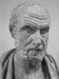

Can yakma!
— Hipokrat
Tıbbın babası ve ilk hekim sayılan Hipokrat (MÖ 460-375) insan bedeni ile ilgili bilimsel çalışmalarda bir çığır açmış ve pek çok hastalığı tespit etmiştir. Günümüzde bir çok kişi onu Hipokrat yemini ile hatırlamaktadır. Göreve yeni başlayan doktorlar tarafından edilen bu yemin doktorluk mesleğinin ahlaki temellerine işaret eder.

Hipokrat Türkiye sahiline çok yakın bir Yunan adası olan Kos’ta doğmuştur. Babası ve dedesi de doktordur. Sağlık eğitimini adadaki asklepieion denen sağlık tapınağında almıştır.
Antik Yunan’da hastalıklar insanlara verilen ilahi cezalar olarak yorumlanırdı. İzlenen tedavi ise genellikle dualar ve tanrılara adanan kurbanlardan ibaretti. Hipokrat hastalıkların doğal nedenlerden kaynaklandığına, dolayısıyla ilaçlarla ve beslenme şeklinin değiştirilmesiyle tedavi edilebileceğine inandı.
Kos’ta bir tıp okulu kurduktan sonra Yunan adalarını dolaşmaya başladı. Kısa zamanda şifacı olarak tanındı. Çeşitli tedavi yötemlerinin listelendiği ve Hipokrat yeminini içeren Corpus Hippocraticum’u onun yazdığına inanılmaktadır.
Hipokrat yemini doktorlara hastaların mahremiyetine saygı göstermelerini öğütler. Uygun ilaçlar vermeli, hastalarla cinsel temastan kaçınmalıdırlar. Öğrendiklerini diğer doktorlarla paylaşmaktan çekinmemelidirler. Hipokrat yemini ve mesleğin kurumsallaşması, Antik Yunan doktorlarından geriye kalan belki de en önemli mirastır.
Pek çok antik düşünür gibi Hipokrat’ın biyografisi de ölümünden çok sonraları yazılmıştır. Hayatı hakkında kesin olarak bilinen pek az şey bulunmaktadır. Kimi kaynaklara göre yüz yıla yakın bir süre yaşamış ve bir Yunan şehri olan Larissa’da ölmüştür.
Ek Bilgiler
1- Kimi hastalık ve bozukluklar Hipokrat adıyla bilinmektedir. Örneğin “Hipokrat Yüzü” suratın son derece süzgün gözüktüğü bir durumu betimleyen ve genellikle ölmek üzere olan hastalar için kullanılan tıbbi bir terimdir.
2- Günümüz doktorları Hipokrat yemininin modifiye edilmiş bir biçimini kullanırlar. Orijinal yeminde bulunan kimi unsurlar günümüzdeki metinden çıkarılmıştır. Örnek vermek gerekirse yeminin orijinal versiyonunda bıçak kullanılarak cerrahlık yapılmasına getirilen yasak güncel metinde yer almamaktadır.
3- Bugün Hipokrat yemini farklı versiyonlarıyla da olsa yaşamaktayken, Yunan doktorun çoğu tıp teorisi bilimsel tıp tarafından reddedilmiştir. Hipokrat insan bedeninin dört unsur tarafından yönetildiğini düşünüyordu: kan, siyah safra, sarı safra ve sümük. Bu ve benzeri düşünceler modern tıp tarafından kabul edilmemektedir.